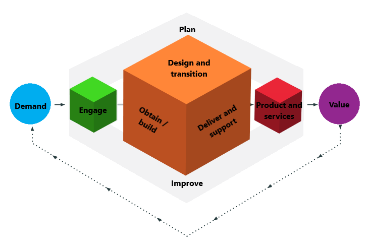

Digital service transformation is about exploiting technology to redefine your business model, accentuating your strengths, overcoming weaknesses, exploiting opportunities and mitigating threats to deliver a competitive advantage. When evaluating what your future "digitally enabled" business model should look like, try considering how a start-up would disrupt your existing market through either:
- Using digital technology to deliver the services you currently offer more effectively.
- Fundamentally changing the cost structure of the business, free from the constraints of legacy processes.

Whether your service transformation aims to enhance internal processes, or offer new capabilities to your customers, it is essential to constantly check that the 3 key tenants of innovation are being satisfied:
- Desirability - What do customers and internal business users want?
- Viability - What can be financially justified both independently and in support of wider business objectives?
- Feasibility - What is technically and organisationally possible?
The sections below outline the EMPEDATA approach to developing effective digital service transformation strategies. If you would like to find out more, please get in touch to arrange a private discussion.
Service Design
Service design looks at the processes you and your customer’s experience, and try to optimize them to reduce friction, cost, and increase efficiency and quality. To help define a journey to deliver the required capabilities ITIL provides a framework to describe how the components and activities of an organization work together as a system to enable value creation, which include:
- Plan– ensure a shared understanding of what your service-provider organization needs to achieve, plus how.
- Engage– engagement with stakeholders to achieve an understanding of their needs and to ensure that these needs are being met.
- Design and transition– creation of new/changed services that meet stakeholder expectations across quality, cost, and time to market.
- Obtain/build– creation of service components, also ensuring that they’re available when and where they’re needed and that agreed specifications are met.
- Deliver and support– ensure that services are delivered and supported according to agreed stakeholder specifications and expectations.
- Improve– ensure the continual improvement of products, services, and practices
We outline how EMPEDATA can help build your digital capability in the Productionise and Analyse pages of this site. However, the key to a success is ensuring you are tackling the right issues, engaging the team and driving adoption of the developed services. Some of the key considerations in the planning and engagement phases include:
- Be clear what is the challenge that needs to be addressed. Define clear success criteria to ensure that the developed solutions remain focussed on delivering real value to the business.
- Actively involve the team, not just the project sponsor, to gain a rich understanding of their issues and involve them in defining solutions to overcome the adoption issues that blight many traditional transformation programmes.
- Documenting and sharing a dictionary of terms to remove any ambiguity or misunderstanding across the team.
- Ensure a clear understanding of how the developed solution integrates with existing customer relationship management (CRM) and enterprise resource planning (ERP). If you are interested in implementing a CRM and/or ERP system, both Salesforce and Microsoft, provide very capable, but expensive solutions. As a more affordable solution we recommend Dolibar a great open-source alternative.
At EMPEDATA we pride ourselves in our ability to deliver value through working with your team, develop the services they need. We believe this value will drive new demand to create new and extend existing services through an enduring partnership of co-created value.
Driving innovation

To frame the objective of your service transformation programme we suggest writing a well-defined design challenge, using the template shown. This design challenge ensures that developed solutions are based on a solid understanding the needs of the user. We then use a process of "Design Thinking" to break down the traditional barriers to innovation:
- Conventionality– Using conventional techniques to solve problems results in conventional solutions. To be truly innovative new ways of working are needed. Design Thinking provides an approach to engage diverse voices from across the organisation to develop a rich understanding of the problem to be addressed.
- Risk Adversity – In a risk adverse culture the tendency is to kill off novel and innovative ideas in favour of safer and better understood solutions. Design thinking promotes a culture of experimentation and failing fast to ensure novel solutions get properly explored.
- Ownership- An innovation won’t succeed unless the company employees get behind it. Design Thinking provides a methodology to involve people in the process of generating ideas, winning support and ensuring ownership of the developed solutions.
The book, Value Proposition Design by Alexander Osterwalder breaks the Design Thinking Process into 5 discrete phases and proposes a range of techniques to be used. As experienced Design Thinking facilitators EMPEDATA can lead members of your team through these phases in a series of fun and engaging workshops to elicit user centric requirements, develop solutions that work and importantly ensure commitment to change from across the organisation.
- Empathise - Immersion in the customer experience to develop empathy and an understanding of their needs.
- Define - These ideas are then consolidated and refined to define a clear problem statement.
- Ideate – Potential solutions are then explored, challenging assumptions and looking at the problem from new angles.
- Prototype – Examines the proposed solutions in more detail through the development of low fidelity models.
- Test - Using these models the team then test their assumptions to better understand how users would interact with the solution.

To find out more about the EMPEDATA workshop facilitation service please get in touch.
Experiment and learn
The process of testing assumptions with users and validating that the proposed solution meets their requirements doesn't stop with the creation of a prototype. In his book, The Lean Startup Eric Ries describes a process, that aligns well with the discovery-based digital servce transformation philosophy. He suggests, when building a new product or service you should start with a minimum viable product (MVP), providing just enough functionality to encourage a small cohort of users to adopt the solution and then, with these "early-adopters" a cycle of designing experiments, testing hypotheses, measuring the response, and learning from the results, referred to as a "Build-Measure-Learn" loop, is defined. As the results come in from these experiments you can then evaluate the appropriate course of action, either:
- Persevere: Your hypothesis was correct, so you decide to press on with the same goals. You repeat the feedback loop to continuously improve and refine your idea.
- Pivot: The experiment has refuted your hypothesis, but you've still gained valuable knowledge about what doesn't work. You can reset, or correct your course and repeat the loop, using what you've learned to test new hypotheses and carry out different experiments.
Through repeating this loop and continuously evaluating how to respond you are able quickly iterate and refine your offering, enabling you to cost-effectively deliver precisely what your users want.
Web analytics provide a powerful tool to track user activity on your site and develop a rich understanding of their interactions. A/B testing is then a way to perform experiments, offering subtly different experiences to different cohorts of users and looking for statistically significant differences between them to help shape the optimum solution. Google provides a range of tools that simplify the process of monitoring user behaviour and performing experiments, check out the Analytics Academy website for more information.
People and skills
Any process is only as good as the people who operate it. As your business becomes more digital the demands on your employees may change. To support them in this transition it may be necessary to invest in training to enable them to adapt and excel in a new working environment.
In addition to redefining existing roles a range of new capabilities will also be required in order to deliver and sustain your digital service transformation. While the long-term objective should be to develop these skills internally, you're probably going to need a hand to get started. With experienced practitioners across all 7 key digital service transformation disciplines, EMPEDATA offer a unique capability to both augment and coach your existing team, ensuring you have to the required skills for both the short and longer term.
- Transformation Leader / Product Owner - Understand how the various initiatives contribute to the strategic goals of the programme, provide clear prioritisation of tasks and ensures the different functions contribute, and adapt to, the new ways of working.
- Data Steward - Ensure there is a clear policy regarding where data is held and how its accuracy is maintained. Security and accessibility requirements also need to be controlled managing user permissions and ensuring compliance with the necessary legislation e.g. GDPR
- Design thinking workshop facilitation / System Analyst - Utilising design workshops and user research techniques to define requirements and potential solutions. The output from this role is a well-defined and validated solution of sufficient fidelity to allow the development to commence.
- Application Developers - This category covers a wide range of skills from managing databases, transforming the data to provide greater value, building ingestion pipelines and APIs to ensure the availability of data where it is required and the creation of applications to provide interfaces with which the users interact. See Productionise for more information.
- Data Scientists / Analyst - Developing mathematical and machine learning models to deliver descriptive, diagnostic, predictive, prescriptive and/or cognitive capabilities. See Analyse for more information
- Scrum Master / Agile Project Manager - Responsible for ensuring the team follows agile processes and practices, establishing an environment where the team can be effective, clearing obstacles and protecting them from outside interruptions and distractions. For a more comprehensive understanding of this role and the value it provides we recommend reading Scrum The Art of Doing Twice The Work In Half the Time
- Process / Application Owner - Either the principal user or somebody with the ability to represent the users' interests, consolidating feedback, informing design decisions and evaluating the suitability of the developed solutions.
To find out more about the EMPEDATA digital skills and coaching services please get in touch.